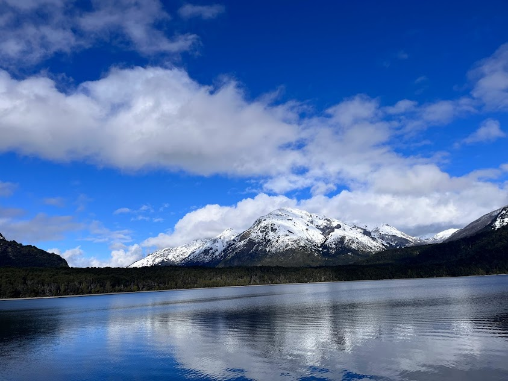
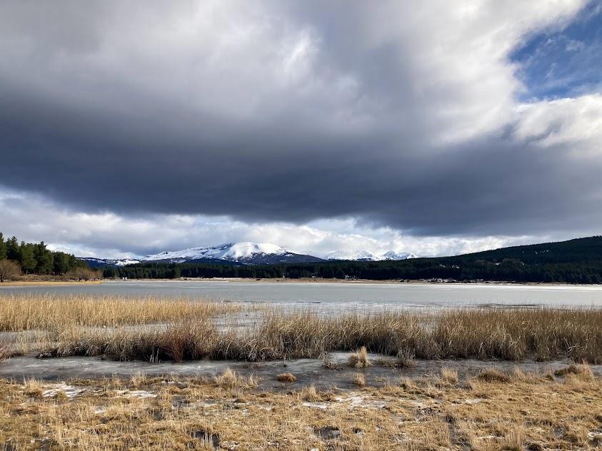
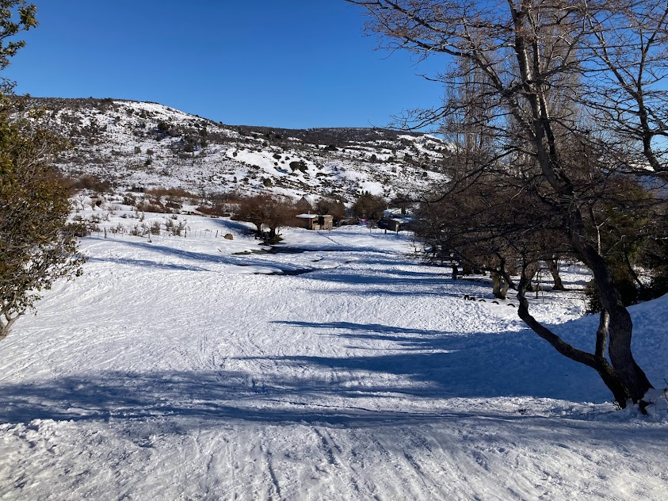

Bienvenido a "De punta a punta Argentina", tu ventana virtual para explorar la diversidad y la
maravilla del turismo en Argentina. En este rincón cibernético, te invitamos a emprender un viaje
único a lo largo y ancho de esta tierra de contrastes, donde cada rincón cuenta una historia
fascinante.
Desde los majestuosos picos de la Cordillera de los Andes hasta las extensas llanuras de la Pampa,
Argentina se despliega como un lienzo impresionante, pintado con la rica paleta de su cultura,
historia y belleza natural. Nuestra misión es ser tu guía en este viaje, brindándote una experiencia
digital que te sumerja en la esencia misma de este hermoso país.
 Imagina encontrarte cara a cara con la imponente belleza de las Cataratas del Iguazú, sentir la
energía vibrante de Buenos Aires, o perder la mirada en la inmensidad de la Patagonia. "De punta a
punta Argentina" es tu pasaporte virtual para descubrir los destinos más emblemáticos, así como
gemas ocultas que solo los verdaderos exploradores conocen.
Imagina encontrarte cara a cara con la imponente belleza de las Cataratas del Iguazú, sentir la
energía vibrante de Buenos Aires, o perder la mirada en la inmensidad de la Patagonia. "De punta a
punta Argentina" es tu pasaporte virtual para descubrir los destinos más emblemáticos, así como
gemas ocultas que solo los verdaderos exploradores conocen.
 Navegar por nuestro sitio te llevará más allá de las imágenes y los datos. Te sumergirás en relatos
auténticos, consejos de viaje de primera mano y una mirada íntima a la riqueza cultural de cada
región. Además, ofrecemos recursos prácticos para ayudarte a planificar tu propia travesía, desde
sugerencias de itinerarios hasta opciones de alojamiento y actividades imperdibles.
En "De punta a punta Argentina", estamos comprometidos con la promoción de un turismo responsable y
sostenible. Creemos que cada viaje tiene el poder de cambiar vidas y queremos inspirarte a descubrir
Argentina de una manera que respete y celebre su entorno único.
Navegar por nuestro sitio te llevará más allá de las imágenes y los datos. Te sumergirás en relatos
auténticos, consejos de viaje de primera mano y una mirada íntima a la riqueza cultural de cada
región. Además, ofrecemos recursos prácticos para ayudarte a planificar tu propia travesía, desde
sugerencias de itinerarios hasta opciones de alojamiento y actividades imperdibles.
En "De punta a punta Argentina", estamos comprometidos con la promoción de un turismo responsable y
sostenible. Creemos que cada viaje tiene el poder de cambiar vidas y queremos inspirarte a descubrir
Argentina de una manera que respete y celebre su entorno único.
 Así que, ¡prepárate para embarcarte en un viaje virtual lleno de descubrimientos y emociones!
Estamos emocionados de tenerte a bordo mientras exploramos juntos la vastedad y la belleza de
Argentina. ¡Bienvenido a tu aventura de punta a punta!
Así que, ¡prepárate para embarcarte en un viaje virtual lleno de descubrimientos y emociones!
Estamos emocionados de tenerte a bordo mientras exploramos juntos la vastedad y la belleza de
Argentina. ¡Bienvenido a tu aventura de punta a punta!


Bienvenidos a De Punta a Punta Argentina


